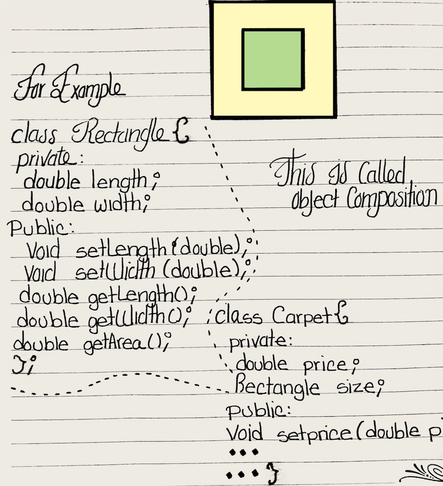

Object-Oriented Programming
An object is a software entity that combines both data and the procedures to process the data in a single unit.
The variables of an object are known as a attributes.
The best practice is that of accessing public member functions in order to access values within the private member variables.
#include <iostream>
using namespace std;
class Cube{
private:
int h;
int w;
public:
void setValues(){
cout << "Enter height: ";
cin >> h;
cout << "Enter width: ";
cin >> w;
}
void getArea(){
cout << "Area of cube: " << h*w;
}
};
int main(int argc, char *argv[]) {
Cube c;
c.setValues();
c.getArea();
return 0;
}
Introduction to classes
In C++, the class is the construct primarily used to create object.
A class usually consists of variables and functions.
class className{ //HEADER //VARIABLES //FUNCTIONS};An actual class would look like this:
class Circle{ private: double radius; public: void setRadius(double r){ radius = r; } double getArea(){ return 3.14 * pow(radius,2); }};Access specifiers
The public and private access specifiers denote who can access the values of the class(The members of the class).
It is a common practice to have private specifiers for variables and public specifiers for functions.
Placement of private and public members
The access specifiers can be grouped in either specciers individually or in groups.
Grouped: ← Preferred
public: int var1; int var2;Individually:
public: int var1;public: int var2;Instances of a class
Objects are instances of a class. They are created with a definition statement after the class has been declared.
For example:
However, in code they would look like this:
circle var01;circle var02;Accessing an object’s member
After declaring an instance of a class, only public members can be accessed.
Public members of a class are accessed by the
. dot operator.circle var01;var.setRadius(1);In the previous example we initialized the object member variable by calling the public member function and sending the argument of 1. The
setRadius() member function will then use the value of 1 to perform an action.Now we could get the area by calling
getArea() member function in order to a value.var.getArea();#include <iostream>
#include <cmath>
using namespace std;
class Circle{
private:
double radius;
public:
void setRadius(double r){
radius = r;
}
double getArea(){
return (3.14 * pow(radius, 2));
}
};
int main(int argc, char *argv[]) {
Circle c;
double r;
cout << "Enter radius: ";
cin >> r;
c.setRadius(r);
cout << "The area of the circle is " << c.getArea();
return 0;
}
Defining member functions
Class member functions can either be defined either inside or outside the class declarations.
Inline functions: They’re like place holders. We need the
inline keyword.They can be used to delete objects →
delete var;The followin program implements the member functions outside the class:
#include <iostream>
#include <cmath>
using namespace std;
class Circle{
private:
double radius;
public:
void setRadius(double);
double getArea();
};
void Circle::setRadius(double r){
radius = r;
}
double Circle::getArea(){
return 3.14 * pow(radius, 2);
}
int main(int argc, char *argv[]) {
Circle c;
double r;
cout << "Enter radius: ";
cin >> r;
c.setRadius(r);
cout << "The area of the circle is " << c.getArea();
return 0;
}
Naming conventions for class member functions
Mutator functions should start with
set:setLength- setWidth
The accessor functions should start with
getgetAreagetLengthgetWidth
Avoiding stale data
It is always better to return the calculation instead of storing them in a variable.
Inline functions
The function definition (body & header) are inside the class; therefore, there is no need for function’s prototypes.
Regular functions may take time and make the CPU work harder. However, inline functions if small enough should be quicker. If the inline function is too big, the compiler will ignore it.
Constructors
A constructor is a member function that is automatically called when a class object/instance is created.
If the programmer doesn’t provide one, C++ will automatically provide one. Most of the time, the programmer uses the constructor to initialize the fields/variables; however, it can do anything a normal function can.
The constructor’s name must be the same as the class’s name.
For example:
class Demo{ public: Demo(){ i = 0; }};
We can also declare the constructor outside the class:
class Demo{ public: Demo();}
Demo::Demo(){
i = 0;
}
The constructor’s main purpose is to provide special values to a class instance.
Only constants can be directly initialized within the class body:
class Demo{{ private: const int SIZE = 100; public: Demo(){ i=0; }};Overloading constructors
If two constructors have the same name, they are said to be overloaded; they can exist and work properly. However, their parameters must be different.
They are pretty much functions with the same name but different parameter list.
For example, the following constructors are not the same, even if they have the same name:
Demo(int i){ num = i;}Demo(){ num = 0;}How do we know which one you called?
Demo var(10); or Demo var();It all depends on the arguments you are sending when you declare the object.
Demo var(); → Demo(){…}Demo var(nameVar); → Demo(string n){…}Default constructors
When defining an object, make sure to pass or not pass an argument, depending on the constructor you are trying to call.
Remember that when no default constructor is provided by the programmer, the class will provide one which will most likely set the fields to garbage values.
Inline constructors
Implementing an inline constructor
Demo::Demo():number(10){}This inline constructor would initialize the integer variable
number to the value of 10.Destructors
A destructor is a member function that is automatically called when the object is destroyed.
They are public member functions, they have the same name as the class, preceded by a tilde →
~Destructors do the opposite of the constructor, they are used when the object goes out of existence, they simply shut down procedures.
For example:
~Demo(){ statement;
}
Destructor properties:
- No return type
- No arguments
- Only one per class
- Must have a
~
Private member functions
Private member functions may only be called from a function that is a member of the same class. These are only to be used in functions meant for internal processing. These functions should be called by public functions for or to process data.
We would be implementing modular programming within the class.
Passing objects to functions
Class objects may be passed as arguments to functions.
Declaring the object:
Sale var(2);Calling the function:
void display(var);Function prototype/ function header:
void display(Sale var);These are if they are on the main .cpp file.
Constant reference parameter
It is recommended to pass objects as constant reference; the
const keyword has to be in the paremeter list.Function protype:
void display(const Sales &);Function header:
Void display(const Sales &var){…}The prototype if inline method is being used:
void value() const{…}Returning an object from a function
Functions can also return objects. The function would normally create a local instance of the class, sets its data members, and then return it.
Object composition
It’s possible for a class to have a member variable that is an instance of another class.
Simply nest an object of one class, to another class.

Focus on software engineering
Separating class specifications, implementation, anc client code.
Usually class declarations are stored in their own header files and member functions in their own .cpp files.
The header file must have the .h extension, for example → className.h
Any program that uses the class, should include the following:
#include <className.h>The member functions are stored in a .cpp file, with the same name as the class. This is known as the class implementation file.
For example → className.cpp
The specification file, which is the header file, constains only the declaration of the class. It does not contain any member functions definitions.
It must include two new preprocessors:
#ifndef#endifThe
#ifndef is called the include guard. It prevents the file from being included more than once. The keyword ifndef stands for if not defined.The .cpp class must include the header file →
#include “header.h”| Syntax | |
|---|---|
< > |
Compiler's filesystem |
" " |
Files in the current project directory |
Encapsulation
In normal terms Encapsulation is defined as wrapping up of data and information under a single unit. In Object Oriented Programming, Encapsulation is defined as binding together the data and the functions that manipulates them.

———————
Encapsulation allows us to use member functions for input validation, thus allowing us to filter data.
// C++ program to explain
// Encapsulation
#include<iostream>
using namespace std;
class Encapsulation{
private:
// data hidden from outside world
int x;
public:
// function to set value of
// variable x
void set(int a){
x =a;
}
// function to return value of
// variable x
int get(){
return x;
}
};
// main function
int main(){
Encapsulation obj;
obj.set(5);
cout<<obj.get();
return 0;
}
Static class members
An static member, is a member variable whose value is the same no matter which object or instance is accessing its value.
To declare a static class member:
static int num;Then we could simply implement it by placing it in a get type of function.
int Demo::getValue(){ return num;}In order for us to properly access the static variable through a function, we must modify our function’s prototype.
static int getValue();We also need to add a declaration of the member static variable in the implementation file.
int Demo::num = 0;This type of static variable does not require a constructor.
Value is static NOT constant
We can change the value of the static member variable.
We can directly access the static variable →
Demo::numAccessing static functions
While in main we have to use the scope resolution
:: operator for static member functions.cout << Demo::getValue();#include <iostream>
#include "Counter.h"
using namespace std;
int main(int argc, char *argv[]) {
Counter c1,c2,c3;
cout << "Number of instances created: " << Counter::returnCount();
return 0;
}
//
// Counter.h
// Created by Jorge A. Ruiz on 12/29/17.
#ifndef _Counter_h_
#define _Counter_h_
class Counter {
public:
Counter();
virtual ~Counter();
static void getCount();
static int returnCount();
private:
static int myStaticInt;
};
#endif
//
// Counter.cpp
// Created by Jorge A. Ruiz on 12/29/17.
#include <iostream>
using namespace std;
#include "Counter.h"
int Counter::myStaticInt = 0;
void Counter::getCount(){
cout << myStaticInt;
}
int Counter::returnCount(){
return myStaticInt;
}
Counter::Counter() {
myStaticInt++;
}
Counter::~Counter() {
}
Constructors
Copy constructor (Assignment operator with classes)
The assignment operator
= works with objects or instances.Cube c1,c2;c1 = c2;The values of one object will be copied into the object being assigned.
This is also known as a compiler generated copy constructor, where both instances will contain the same attributes with the same values.
Cube c2(c1);This only works well with objects whose members are not pointers; however, with objects whose members are pointers, it will create a shallow copy.
#include <iostream>
class Cube{
private:
double h;
double w;
public:
void setValues(double, double);
int getArea();
Cube();
};
void Cube::setValues(double a, double b){
h = a;
w = b;
}
int Cube::getArea(){
return h*w;
}
Cube::Cube(){
h = 0;
w = 0;
}
using namespace std;
int main(int argc, char *argv[]) {
Cube c1;
int h,w;
cout << "Enter value for c1.h: ";
cin >> h;
cout << "Enter value for c1.w: ";
cin >> w;
c1.setValues(h, w);
//COPY CONSTRUCTOR
Cube c2(c1);
cout << "Area from c2: " << c2.getArea();
return 0;
}
Convert constructor
A constructor that takes a single parameter of a type other than its class type can be regarded as converting its parameters into an object of its class.
- Convert constructors are constructors with a single parameter of a type other than the class.
- They provide a way for the compiler to convert a value of a given type to ab object of the class.
class Cube{ private: int area; public: Cube(int i){area = i;}}One could access the convert constructor in the following ways:
Cube c(10);
or
Cube c;c = 10;or
Cube c = 10;
#include <iostream>
class Cube{
private:
int area;
public:
Cube(int);
int getArea();
};
Cube::Cube(int i){
area = 10;
}
int Cube::getArea(){
return area;
}
using namespace std;
int main(int argc, char *argv[]) {
//CONVERT CONSTRUCTOR
Cube c = 10;
cout << c.getArea();
return 0;
}
Shallow copy problems
When doing or using a copy constructor; if the values of one instance changes they might change the other instance’s member values too, simply because they might be pointing to the same pointer’s address.
If you are dynamically allocating memory, the destructor of the shallow copy might delete a pointer that still be in used by the original instance.
Deep copy
In order to fix the problems of shallow copies, we have to write our own copy constructors in order to ensure that each instance is using their own memory address.
Person::Person(const Person& p){name = new char[80];strcpy(name,p.name);}The main concept is that we will have to individually set the values in order to prevent pointing to the same address.
This could be solved in a very simple manner, such as using a simple for loop in order to copy the values of one array of pointers into another. Remember that values ≠ address! Simply copy the values and not the addresses!
Copy constructor and passing by reference
We simply pass by reference because we don’t want to manipulate our source variable.
Person::Person(const Person& p){…} Prevents changes and only allows us to have access to the values for copying purposes.